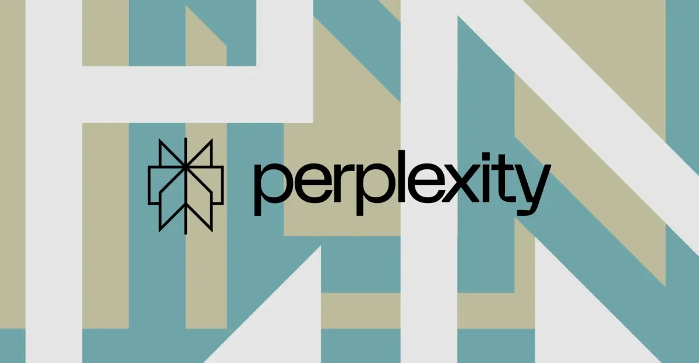
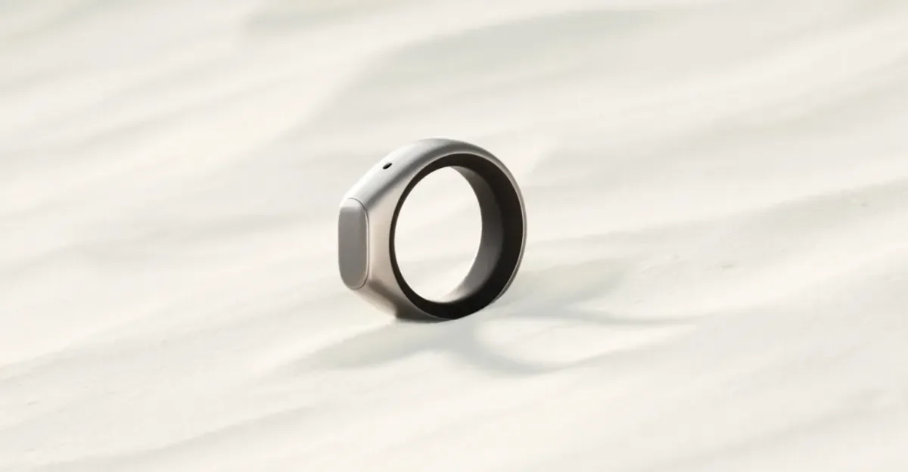
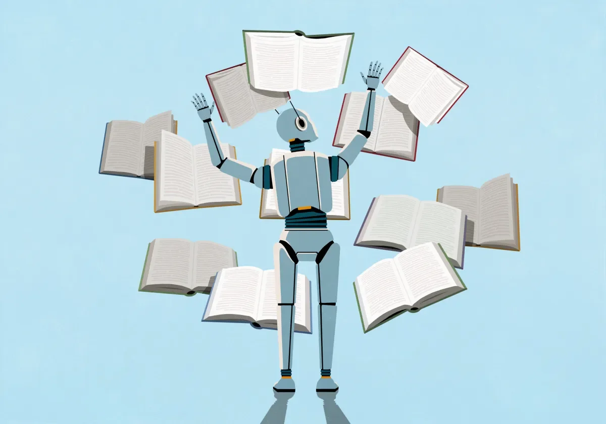

01
超1100名AI从业者联名呼吁政府干预自动化AI
OpenAI、Anthropic、谷歌、Meta等公司领袖签署声明，要求政府采取措施应对自动化AI的风险。

今天，超过1100名AI从业者，包括来自OpenAI、Anthropic、谷歌、Meta等公司的领袖，联合签署了一份声明，呼吁美国政府采取行动应对自动化AI的发展。声明指出，自动化AI——即能够自主运行、无需人类干预的AI系统——可能带来失控风险，需要政府制定规则。这与过去行业主导的自我监管思路不同，现在从业者主动要求外部介入。技术门槛在于，自动化AI的决策过程难以解释和预测，监管难度大。例如，一个自动交易系统可能在毫秒内完成数千笔交易，但一旦出现错误，后果可能是灾难性的。声明中特别提到了“前沿自动化AI”，即那些能力接近或超越人类水平的系统，认为它们需要更严格的审查。对普通人来说，这可能意味着未来AI应用会面临更严格的安全审查，比如自动驾驶、自动客服等场景的部署速度可能放缓。同时，这也可能催生新的职业，如AI审计师和伦理合规官。行动建议：关注相关立法动态，尤其是在涉及就业和隐私的领域。如果你从事AI开发，建议提前了解合规要求，避免未来政策变化带来的风险。
伊恩的观察
AI行业从“别管我”转向“请管我”，自动化AI的风险共识正在形成。
02
AI终于贵到让华尔街紧张了
谷歌等巨头的资本支出超出预期，投资者开始质疑AI的回报周期。
今天The Verge报道了一个有意思的信号：AI终于贵到让华尔街感到不安了。背景是谷歌等科技巨头公布的资本支出数字超出了分析师的预期，这些钱大部分流向了AI基础设施——数据中心、GPU集群、电力消耗。过去几年，市场对AI的热情几乎不计成本，但最近几周，多家AI相关公司的股价出现回调。变化在于，投资者开始追问：这些投入什么时候能产生足够的收入？从技术门槛看，训练前沿模型的成本确实在指数级增长，而商业化路径仍然模糊。以谷歌为例，其母公司Alphabet在最新财报中披露的资本支出同比增长超过五成，主要用于建设新的数据中心和采购专用芯片。然而，AI产品的收入增长并未同步跟上，这导致部分投资者开始重新评估估值。华尔街的担忧并非没有道理：历史上，每一次技术革命都伴随着过度投资和泡沫，AI可能也不例外。但另一方面，AI的长期潜力依然被看好，关键在于谁能率先找到可持续的商业模式。对普通人来说，这意味着未来AI服务的价格可能会上涨，或者免费服务的质量会下降。例如，OpenAI已经推出了付费版ChatGPT Plus，而谷歌的Gemini也可能逐步引入订阅模式。行动建议：如果你依赖某些AI工具，可以关注其定价策略变化，提前规划预算。同时，留意那些能够证明自身盈利能力的企业，它们更可能在资本寒冬中存活下来。
伊恩的观察
AI的资本盛宴进入中场，投资者开始要求看到真金白银的回报。
03
Perplexity的Personal Computer把Windows变成AI代理
Perplexity推出Windows版Personal Computer，让PC具备AI代理能力。

Perplexity今天宣布，其Personal Computer产品正式支持Windows系统。这款产品本质上是一个AI代理平台，可以理解你的指令、操作应用程序、管理文件，甚至跨软件完成任务。此前该产品仅支持Mac，现在扩展到Windows，意味着覆盖了绝大多数PC用户。技术门槛在于，AI代理需要深度集成操作系统权限，同时保证安全性和隐私。与传统的语音助手不同，Perplexity的代理能执行多步骤任务，比如“整理上个月的发票并发送邮件给财务”。它通过自然语言理解你的意图，然后调用系统API或第三方应用接口来执行操作。例如，你可以说“帮我找一下上周的会议记录，提取关键决策，然后发给团队”，它就会自动搜索文件、提取内容并发送邮件。对普通人来说，这相当于给电脑装了一个“会干活的AI管家”。不过，这也带来了隐私担忧：代理需要读取你的文件、邮件和日历，这些数据如何存储和保护？Perplexity表示所有处理都在本地进行，但用户仍需谨慎。行动建议：如果你是Windows用户，可以尝试安装体验，但注意权限设置，避免敏感数据泄露。建议先从非敏感任务开始，比如文件整理或日程安排。
伊恩的观察
AI代理从概念走向桌面，Windows用户终于能体验“动口不动手”的电脑操作。
04
智能戒指正在成为我喜欢的AI小设备
智能戒指开始集成AI功能，成为更自然的可穿戴AI入口。

今天The Verge的一篇评论文章指出，智能戒指正在成为理想的AI小设备。与智能手表相比，戒指更轻便、续航更长、佩戴无感，适合全天候健康监测和轻量交互。最新一代产品开始集成AI功能，比如通过语音或手势控制智能家居、实时翻译、健康数据分析等。技术门槛在于，戒指体积小，传感器和电池受限，AI处理需要依赖云端或手机。变化在于，AI让戒指从“记录器”变成了“助手”。例如，三星的Galaxy Ring已经支持通过双击接听电话或控制音乐播放，而Oura Ring则利用AI分析睡眠数据并提供改善建议。未来，戒指可能成为AI助手的理想载体——它始终戴在手上，随时可以唤醒，却又不像手机那样让人分心。对普通人来说，这意味着未来可能不需要掏出手机，抬抬手就能完成很多操作。比如，在开车时用手指轻点戒指就能导航，或者在会议上悄悄用戒指翻译外语。但挑战也很明显：电池续航、传感器精度和隐私保护都需要改进。行动建议：如果你对可穿戴设备感兴趣，可以关注三星、Oura等品牌的新品，但注意数据隐私和续航表现。可以先从基础的健康监测功能开始体验。
伊恩的观察
智能戒指+AI，可能是最不打扰人的可穿戴计算形态。
05
机器人检测初创公司Spur从Insight融资2亿美元
Spur获得2亿美元融资，用于检测和防御自动化机器人。

今天TechCrunch报道，机器人检测初创公司Spur从Insight Partners获得了2亿美元融资。Spur的技术核心是识别网络上的自动化机器人——无论是恶意爬虫、虚假账户还是自动化攻击。随着AI生成的虚假内容泛滥，企业和平台对反机器人工具的需求激增。技术门槛在于，机器人越来越像真人，需要多维度的行为分析才能准确识别。Spur通过分析IP地址、行为模式、浏览器指纹等特征来区分人类和机器。例如，一个账号在短时间内发送大量相似评论，或者访问频率异常，就可能被标记为机器人。这笔融资表明，资本正在押注“反AI”赛道——当AI生成内容越来越逼真，检测工具的价值就越大。对普通人来说，这意味着你遇到的网络诈骗、虚假评论、刷票行为可能会减少。例如，电商平台可以利用Spur的技术过滤虚假评价，社交媒体可以打击僵尸粉。但这也可能带来隐私担忧：为了检测机器人，平台需要收集更多用户行为数据。行动建议：如果你运营网站或社群，可以考虑集成类似服务；普通用户则可以在可疑页面留意验证机制，如验证码或行为验证。同时，注意保护自己的在线行为数据，避免被过度采集。
伊恩的观察
AI越强，反AI的工具越值钱，机器人检测成了资本新宠。
无障碍文字记录
伊恩 你好，欢迎收听今天7月29日的「伊恩每日·科技」。今天有五件事，但核心只有一个：AI正在从概念炒作进入成本与信任的考验期。一边是AI领袖联名上书，请求政府管管自动化AI；另一边，华尔街因为AI太烧钱开始紧张了。同时，Perplexity把Windows变成了AI代理，智能戒指悄悄成为新形态，而一家反机器人公司拿到了2亿美元。我们一个一个聊。
伊恩 今天，超过1100名AI从业者——来自OpenAI、Anthropic、Google、Meta等公司——签署了一封联名信，请求美国政府采取措施应对自动化AI。这封信不是反对AI，而是要求政府“管起来”：建立监管框架、设立安全标准，防止自动化AI引发大规模失业、社会不平等和安全风险。注意，这是从业者自己提出的，不是外部批评。过去几年，AI公司一直强调“自我监管”，现在主动要求政府介入，说明技术跑得太快，连造它的人都觉得需要刹车了。
对比2023年那封呼吁暂停训练超强AI的公开信，这次更具体：不是所有AI，而是那些能替代人类决策和工作的自动化系统。技术门槛已经很低——GPT-4级别的模型就能完成大量重复性工作。成本门槛方面，训练前沿模型需要数亿美元，但部署自动化AI的成本正在快速下降。产业赢家可能是监管合规工具公司，输家则是依赖低成本劳动力的行业。
对普通人来说，这意味着未来几年你的工作可能被AI部分替代，但监管会试图缓冲冲击。不过，监管本身也有代价：可能拖慢创新，或者让大公司更容易设置壁垒。这封信更像一个信号：AI自动化不再是科幻，而是即将落地的现实。
听众 伊恩，联名信提到具体威胁了吗？比如哪些岗位最危险？
伊恩 信里没有列举具体岗位，但根据上下文，自动化AI威胁最大的可能是客服、数据录入、内容审核、甚至初级编程。这些岗位的工作流程相对标准化，AI已经能做得不错。不过，这封信的重点是呼吁政府建立“安全港”机制，让公司报告自动化部署计划，而不是直接禁止。所以，短期看，受影响的是重复性工作，但长期看，所有白领工作都可能被波及。
伊恩 今天聊一个让华尔街坐立不安的信号：AI终于贵到让投资者开始怀疑人生了。
先看事实。7月29日，The Verge报道，Google母公司Alphabet的资本支出暴增，主要砸向AI基础设施，但财报公布后股价下跌——因为投资者发现，这些投入还没有带来对等的收入增长。这不是Google一家的问题。微软、亚马逊、Meta都在疯狂建数据中心、买GPU，每个季度几百亿美元地花，但AI产品的订阅费和广告收入，远没到能覆盖这些支出的程度。
对比一下2023年，那时候只要沾上AI，股价就涨。市场相信“先投入、后回报”的故事，认为AI是下一个互联网。但现在，故事讲了一年多，回报还没来，华尔街开始算账了。
算账的逻辑很简单：你花了多少钱，赚了多少钱，差额是多少。AI基础设施的投入是实打实的——单是训练一个GPT-5级别的模型，成本可能超过10亿美元。而AI产品呢？ChatGPT的订阅收入、微软Copilot的企业付费、Google的AI广告增量，都还远不足以填平这个窟窿。
技术门槛其实不是问题——钱能解决算力，人才也能挖。真正的门槛是成本门槛。当投入规模大到影响公司整体利润时，CFO们就会开始问：这钱什么时候能赚回来？
这个博弈里，赢家和输家已经比较清晰了。赢家是英伟达这样的“卖铲人”——不管谁建数据中心，都得买它的GPU。输家可能是那些过度投资但变现慢的云厂商，比如Google Cloud和Azure，它们花了几百亿建算力，但客户（包括AI创业公司）自己也在烧钱，付费能力有限。
对普通人来说，这意味着什么？AI产品可能不会变得更便宜。公司需要收回成本，要么涨价，要么在免费版里塞更多广告。你用的ChatGPT、Copilot、Gemini，未来很可能要么更贵，要么更“吵”。
我的判断是：AI产业正在从“烧钱抢地盘”进入“算账过日子”阶段。这不是泡沫破裂，而是市场在逼着公司证明自己。接下来，我们会看到更多AI公司开始强调“单位经济模型”和“投资回报率”，而不是只讲参数和算力。
对投资者来说，这是个风险重估的时刻。对用户来说，这是个提醒：免费午餐快结束了。
伊恩 想象一下，你坐在电脑前，对屏幕说一句“帮我订一张下周二去北京的机票，选靠窗座位”，然后电脑就自己打开浏览器、登录网站、填好信息、完成支付。这不是科幻，这是Perplexity刚刚在Windows上推出的“Personal Computer”功能。
Perplexity之前已经在Mac上发布了类似产品，现在正式扩展到Windows。它本质上是一个运行在操作系统之上的AI层，能够理解屏幕上的所有像素内容，并模拟鼠标和键盘操作来执行任务。它不只是回答问题的聊天机器人，而是一个能操控电脑的AI代理。
和传统的自动化工具比如RPA（机器人流程自动化）相比，Perplexity不需要你编写任何脚本或规则。你用自然语言说出需求，它就能理解上下文并自主完成操作。比如，它可以自动填写表格、整理文件夹、发送邮件，甚至跨应用完成复杂流程。
这项技术的门槛非常高。首先，它需要多模态大模型来实时理解屏幕上的图像——不仅仅是识别文字，还要理解按钮、菜单、弹窗等UI元素。其次，它需要精确的模拟控制能力，确保鼠标点击和键盘输入在正确的位置。最后，实时推理需要大量的算力，这对成本和延迟都是挑战。
从产业格局来看，赢家显然是Perplexity这类AI代理公司，它们正在重新定义人机交互的方式。输家则可能是传统的RPA厂商，比如UiPath和Automation Anywhere，因为它们的核心价值——通过编程实现自动化——正在被自然语言交互所取代。此外，操作系统厂商如微软也需要思考如何应对：是拥抱这类第三方AI代理，还是推出自己的竞品？
对你我这样的普通用户来说，这意味着你的电脑很快会变成一个“能帮你干活”的智能助手。你不再需要学习复杂的软件操作，只要说出需求，电脑就能替你完成。但硬币的另一面是隐私风险：这个AI代理需要看到你屏幕上的一切——包括邮件、聊天记录、银行账户信息。Perplexity如何处理这些数据，是否会上传云端，将是决定用户信任的关键。
我的判断是：AI代理是继智能手机之后最重大的人机交互变革，但隐私和安全性将是它能否普及的最大障碍。在技术成熟之前，建议你先用一些简单的、不涉及敏感信息的任务来体验，比如整理桌面文件或设置日历提醒。
听众 Perplexity的代理和微软Copilot有什么区别？
伊恩 好问题。微软Copilot更多是嵌入Office等应用的辅助工具，比如帮你写文档、做PPT。而Perplexity的“个人电脑”是系统级的——它可以操作任何Windows应用，甚至包括第三方软件。Copilot是“集成”，Perplexity是“覆盖”。但微软的优势是深度绑定系统，未来可能推出类似功能。目前Perplexity更激进，但微软更稳妥。
伊恩 你有没有想过，一个比硬币大不了多少的戒指，可能比你的智能手表更懂你的身体？今天，The Verge的一篇文章让我重新审视了智能戒指这个品类。文章作者说，智能戒指终于找到了自己的定位——不是取代手表，而是作为AI的“低调传感器”。
先看事实：三星、Oura等品牌的智能戒指，可以24/7监测心率、睡眠、血氧等生理指标，然后通过AI分析给出健康建议。这些产品已经上市，Oura Ring 4售价约350美元，三星Galaxy Ring约400美元。
对比智能手表，戒指的优势很明显：更轻便，几乎无感佩戴；续航更长，普遍在一周以上；更适合全天候佩戴，尤其是睡觉时。而智能手表往往需要每天充电，且体积较大，很多人不愿意戴着睡觉。
技术门槛在哪里？核心是微型化传感器和低功耗AI芯片。要在这么小的空间里塞进多个高精度传感器，同时保证续航，需要非常先进的封装和芯片设计。成本方面，高端戒指约300-500美元，已经和主流智能手表相当。
那么，谁会受益？健康AI公司是最大赢家——它们可以利用戒指收集的连续生理数据，训练更精准的疾病预测模型。谁可能受损？智能手表厂商——如果戒指能替代手表的部分健康监测功能，用户可能不再需要手表。
对你我来说，这意味着AI健康监测将变得更加无感。你可能戴着戒指睡觉，AI自动分析你的睡眠质量、心率变异性，甚至提前预警潜在的健康风险。你不需要主动操作，AI在后台默默工作。
我的判断是：智能戒指不会完全取代手表，但会分走健康监测这块蛋糕。未来，戒指+耳机的组合可能成为新的“随身AI终端”——戒指负责感知身体，耳机负责语音交互。这个趋势值得关注。
伊恩 今天要聊一笔2亿美元的融资，背后是一个你可能没听过、但每天都在打交道的问题：怎么判断屏幕对面的是真人还是机器？
反机器人公司Spur从Insight Partners拿到了2亿美元。Spur的核心业务是检测和防御自动化机器人——包括虚假账号、爬虫、恶意AI代理。随着AI生成内容泛滥，企业越来越难分清哪些是真人用户、哪些是机器脚本。传统的验证码已经形同虚设，AI可以轻松破解。Spur的做法是分析行为模式：比如鼠标移动轨迹、点击频率、页面停留时间、打字节奏，而不是简单地问“你是不是机器人”。
对比传统安全公司，Spur的差异化在于“AI对抗AI”。传统方案主要靠规则库和签名匹配，但机器人的行为也在进化。Spur用机器学习模型实时分析流量，识别那些模仿人类但存在细微异常的机器人。技术门槛很高：需要处理海量数据，延迟要低到毫秒级，同时避免误伤真实用户。成本门槛也不低，但企业愿意为此付费——虚假流量意味着广告浪费、数据污染、甚至欺诈损失。
这笔融资的产业信号很明确：AI时代，身份验证正在从“你是谁”转向“你怎么做”。赢家是Spur这类反机器人初创，它们抓住了企业对抗AI欺诈的刚需。输家是那些依赖虚假流量来维持数据的平台——比如靠刷量撑数据的社交网络、刷单的电商平台。
对普通人来说，这有两面性。好处是你在网上的互动会更安全，比如你点的广告更可能是真人投放的，你收到的评论更可能是真实用户的。但代价是，为了判断你是不是真人，你的行为数据会被更深入地分析——鼠标怎么动、页面怎么翻、打字快慢，这些都可能被记录。隐私和安全的平衡，正在被重新定义。
我的判断是：反机器人会成为AI基础设施的一部分，就像防火墙一样标配。但普通用户需要关注的是，这些检测系统是否透明、数据是否被滥用。毕竟，证明自己是人这件事，正在变得越来越复杂。
听众 今天这些事，哪一件对普通人影响最大？
伊恩 我觉得是Perplexity的AI代理。它直接改变你使用电脑的方式，而且隐私风险最贴近个人。智能戒指影响健康，但你可以选择不戴；联名信和华尔街是宏观趋势；Spur是幕后技术。但AI代理一旦普及，你的每一次点击、每一个文件都可能被AI理解，这是根本性的变化。当然，影响最大的也可能是最慢的——监管和商业模式调整需要时间。
伊恩 今天五件事，看似分散，但有一条主线：AI正在从“能做什么”转向“成本多少、谁受益、谁受损”。联名信和华尔街紧张都指向同一个问题——AI的投入和风险需要被管理。Perplexity和智能戒指则展示了AI落地的两种路径：一种是系统级代理，强大但侵入；一种是轻量传感器，无感但局限。Spur的融资则提醒我们，AI越强大，反AI的需求就越大。整体来看，AI产业正在分化：一边是巨头烧钱赌未来，一边是初创寻找利基。对普通人来说，AI的影响越来越具体——你的工作、你的电脑、你的健康、你的网络安全，都在被重塑。
伊恩 好，今天就是这样。AI领袖呼吁监管、华尔街质疑成本、Perplexity接管你的电脑、智能戒指戴上你的手指、反机器人公司拿到巨款——这些信号拼在一起，告诉我们AI正在进入一个更复杂、更现实的阶段。明天见。